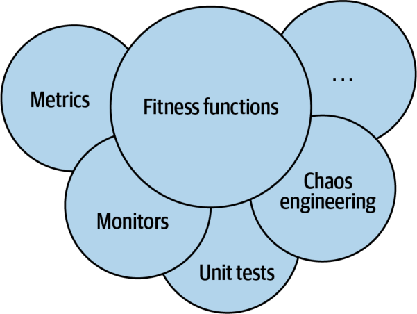
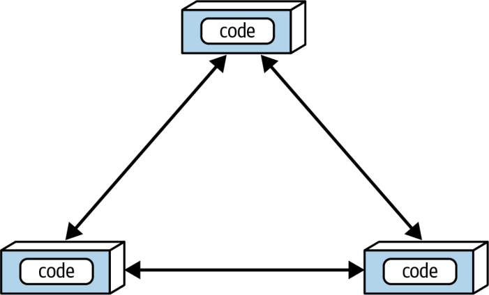
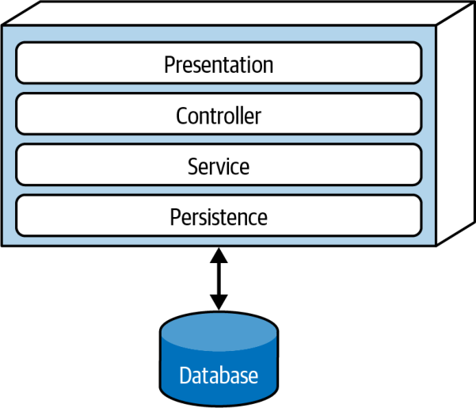

معماران باید با طیفِ بسیار گستردهای از ویژگیهای معماری در همهٔ جنبههای پروژههای نرمافزاری سروکار داشته باشند. جنبههای عملیاتی مانند کارایی، کشسانی و مقیاسپذیری با دغدغههای ساختاری مانند ماژولاریتی و استقرارپذیری درمیآمیزند. برای معماران سودمند است که بدانند چگونه ویژگیهای معماری را بسنجند و بر آنها حاکمیت داشته باشند، بهجای آنکه در اصطلاحاتِ مبهم و تعریفهای کلی غرق شوند. این فصل بر تعریفِ مشخصِ برخی از رایجترین ویژگیهای معماری تمرکز میکند و شیوهٔ ساختنِ سازوکارهای حاکمیت برای آنها را بررسی میکند.
سنجشِ ویژگیهای معماری
معماران به چند دلیل در تعریفِ ویژگیهای معماری با دشواری روبهرو میشوند:
فیزیک نیستند: بسیاری از ویژگیهای معماریِ رایج معناهای مبهمی دارند. برای نمونه، معمار چگونه برای چابکی یا استقرارپذیری طراحی میکند؟ یا برای «کاراییِ برقآسا»؟ افراد در سراسرِ صنعت دیدگاههای بسیار متفاوتی دربارهٔ اصطلاحاتِ رایج دارند؛ این تفاوتها گاهی از زمینههای متفاوت و موجه سرچشمه میگیرند و گاهی تصادفیاند.
تعریفهای بسیار گوناگون: حتی درونِ یک سازمان هم ممکن است بخشهای مختلف بر سرِ تعریفِ ویژگیهای حیاتیای مانند کارایی همنظر نباشند. تا زمانی که توسعهدهندگان، معماران، تیمِ عملیات و دیگران بر یک تعریفِ مشترک توافق نکنند، چگونه میتوانند گفتوگوی درستی داشته باشند؟
بیش از حد مرکب: بسیاری از ویژگیهای معماریِ مطلوب در واقع مجموعهای از ویژگیهای دیگر در مقیاسی کوچکترند؛ همانطور که شاید از بحثِ ما دربارهٔ ویژگیهای معماریِ مرکب در فصل ۵ به یاد داشته باشید. برای نمونه، چابکی به ویژگیهایی مانند ماژولاریتی، استقرارپذیری و آزمونپذیری تجزیه میشود.
تجزیهٔ ویژگیهای معماریِ مرکب به اجزای سازندهشان بخشِ مهمی از ایجادِ تعریفهای عینی برای ویژگیهای معماری است و هر سه مشکلِ بالا را حل میکند.
وقتی سازمانی توافق میکند که همه از تعریفهای استاندارد و مشخص برای ویژگیهای معماری استفاده کنند، یک زبان فراگیر پیرامونِ معماری پدید میآورد. این استانداردسازی به آنها امکان میدهد ویژگیهای مرکب را باز کنند و به خصیصههایی برسند که بهطورِ عینی سنجشپذیرند.
سنجههای عملیاتی
بسیاری از ویژگیهای معماری، مانند کارایی یا مقیاسپذیری، سنجههای مستقیم و آشکاری دارند. با این حال، حتی همینها هم بسته به اهدافِ تیم تفسیرهای ظریفِ فراوانی میپذیرند. برای نمونه، شاید تیمِ شما میانگینِ زمانِ پاسخ (average response time) را برای برخی درخواستها بسنجد؛ نمونهای خوب از سنجهای برای یک ویژگی عملیاتیِ معماری. اما اگر تیمِ شما فقط میانگین را بسنجد، چه میشود اگر یک شرطِ مرزی (boundary condition) باعث شود ۱٪ از درخواستها ۱۰ برابرِ بقیه طول بکشند؟ اگر سایت ترافیکِ کافی داشته باشد، این دادههای پرت (outliers) شاید اصلاً دیده نشوند. برای شکارِ دادههای پرت، شاید بخواهید بیشینهٔ زمانِ پاسخ را هم بسنجید.
تیمهای سطحِ بالا فقط اعدادِ سفتوسختی برای کارایی تعیین نمیکنند؛ آنها تعریفهایشان را بر تحلیلِ آماری بنا میکنند. برای نمونه، فرض کنید یک سرویسِ پخشِ ویدئو میخواهد مقیاسپذیری را پایش کند. مهندسان بهجای تعیینِ عددی دلبخواهی بهعنوانِ هدف، مقیاس را در گذرِ زمان میسنجند و مدلهای آماری میسازند، سپس اگر معیارهای بیدرنگ از مدلهای پیشبینی بیرون بزنند، هشدار میدهند. اگر چنین شود، این شکست میتواند دو معنا داشته باشد: یا مدل نادرست است (که تیمها دوست دارند بدانند) یا مشکلی در کار است (که تیمها این را هم دوست دارند بدانند).
انواعِ ویژگیهایی که تیمها میسنجند، همپای ابزارها، اهداف، دستگاهها و قابلیتها، بهسرعت تحول مییابند. برای نمونه، اخیراً بسیاری از تیمها بر بودجههای کارایی (performance budgets) برای معیارهایی مانند نخستین رنگآمیزیِ محتوایی (first contentful paint) و نخستین بیکاریِ CPU (first CPU idle) تمرکز کردهاند؛ هر دو معیار گویای بسیاری از مشکلاتِ کارایی برای کاربرانیاند که با دستگاههای موبایل صفحههای وب را باز میکنند. با تغییرِ این موارد و چیزهای بیشمارِ دیگر، تیمها چیزهای تازهای برای سنجیدن و راههای تازهای برای سنجششان خواهند یافت.
چهرههای گوناگونِ کارایی
بسیاری از ویژگیهای معماری که توصیف میکنیم چند تعریف دارند. کارایی نمونهٔ بسیار خوبی است. بسیاری از پروژهها به کاراییِ کلی نگاه میکنند: برای نمونه، اینکه چرخههای درخواست و پاسخ در یک برنامهٔ وب چقدر طول میکشند. اما معماران و مهندسانِ DevOps در بسیاری از سازمانها، با کارِ بسیار زیاد، بودجههای کاراییِ مشخصی برای بخشهای مشخصی از برنامه تعیین کردهاند. برای نمونه، بسیاری از سازمانها رفتارِ کاربران را پژوهیدهاند و دریافتهاند که زمانِ بهینه برای نخستین رندرِ صفحه (first-page render)، یعنی نخستین نشانهٔ دیدنیِ پیشرفتِ بارگذاریِ یک صفحهٔ وب در مرورگر یا دستگاهِ موبایل، کسری از یک ثانیه است. بیشترِ برنامهها در این معیار در محدودهٔ دو رقمی قرار میگیرند. اما برای سایتهای مدرنی که میکوشند هرچه بیشتر کاربر جذب کنند، این معیار مهمی برای پیگیری است و سازمانهای پشتِ این سایتها سنجههای بسیار ظریفی ساختهاند.
برخی از این معیارها پیامدهای دیگری هم برای طراحیِ برنامه دارند. بسیاری از سازمانهای آیندهنگر برای بارگیریِ صفحهها بودجهٔ وزنِ کیلوبایتی (K-weight budget) تعیین میکنند؛ یعنی حداکثری برای حجمِ کتابخانهها و چارچوبهایی که میتوانند در یک صفحهٔ مشخص بارگذاری شوند، بر حسبِ بایت، مجاز میدانند. منطقِ آنها از محدودیتهای فیزیکی میآید: در هر لحظه فقط شمارِ محدودی بایت میتواند از شبکه عبور کند، بهویژه برای دستگاههای موبایل در مناطقِ کمپهنایباند.
سنجههای ساختاری
برخی سنجههای عینی به اندازهٔ کارایی آشکار نیستند. ویژگیهای ساختاریِ درونی، مانند ماژولاریتیِ خوشتعریف، چطور؟ این نمونهٔ خوبی از یک ویژگی نامشهودِ معماری است: معماران مسئولِ تعریفِ مؤلفهها و تعاملهایشان هستند و میخواهند ساختاری پایدار برای کیفیتِ بالای کلی بسازند. متأسفانه هنوز هیچ معیارِ جامعی برای ارزیابیِ کیفیتِ یک معماری وجود ندارد. با این حال، معیارها و ابزارهای رایجی هست که به معماران امکان میدهد به برخی جنبههای حیاتیِ ساختارِ کد بپردازند، هرچند در ابعادی محدود.
یکی از جنبههای سنجشپذیرِ کد پیچیدگی است که معیارِ پیچیدگی چرخهای آن را تعریف میکند.
پیچیدگی چرخهای
پیچیدگی چرخهای (CC) معیاری در سطحِ کد است که Thomas McCabe Sr. در سالِ ۱۹۷۶ طراحی کرد تا سنجهای عینی برای پیچیدگیِ کد در سطحِ تابع/متد، کلاس یا برنامه فراهم کند. این معیار با بهکارگیریِ نظریهٔ گراف (graph theory) روی کد محاسبه میشود؛ بهطورِ مشخص، روی نقاطِ تصمیم (decision points) که مسیرهای اجرای متفاوتی پدید میآورند. برای نمونه، اگر تابعی هیچ دستورِ تصمیمی (مانند دستورهای if) نداشته باشد، آنگاه CC = 1 است. اگر تابع یک دستورِ شرطی داشته باشد، آنگاه CC = 2 است، چون دو مسیرِ اجرای ممکن وجود دارد.
فرمولِ محاسبهٔ CC برای یک تابع یا متد $CC = E - N + 2$ است که در آن N نمایندهٔ گرهها (nodes) یا همان خطوطِ کد، و E نمایندهٔ یالها (edges) یا همان تصمیمهای ممکن است. کدِ C-مانندِ مثالِ ۶-۱ را در نظر بگیرید.
مثال ۶-۱. نمونهکدی برای ارزیابیِ پیچیدگی چرخهای
public void decision(int c1, int c2) {
if (c1 < 100)
return 0;
else if (c1 + C2 > 500)
return 1;
else
return -1;
}
پیچیدگی چرخهایِ مثالِ ۶-۱ برابر با ۳ است ($3 - 2 + 2$)، همانطور که در شکل ۶-۱ نشان داده شده است.
شکل ۶-۱. گرافِ پیچیدگی چرخهای برای تابعِ decision.
عددِ ۲ در فرمولِ پیچیدگی چرخهای سادهسازیای برای یک تابع/متدِ منفرد است. برای فراخوانیهای انشعابی به متدهای دیگر (fan-out calls)، که در نظریهٔ گراف مؤلفههای همبند (connected components) نامیده میشوند، فرمولِ کلیتر $CC = E - N + 2P$ است که در آن P نمایندهٔ شمارِ مؤلفههای همبند است.
معماران و توسعهدهندگان همگی بر این توافق دارند که کدِ بیش از حد پیچیده نوعی «بوی کد» است؛ چیزی در کد که آنقدر بد است که گویی بویی خیالی از آن برمیخیزد. چنین کدی تقریباً به همهٔ ویژگیهای مطلوبِ پایگاههای کد آسیب میزند: ماژولاریتی، آزمونپذیری، استقرارپذیری و مانندِ اینها. اگر تیمها پیچیدگیِ رو به رشد را بهتدریج زیرِ نظر نگیرند، این پیچیدگی سرانجام بر پایگاهِ کد چیره میشود.
پیچیدگی چرخهای نمونهٔ خوبی از کُندیِ معیارهایی است که معماران در اختیار دارند. این معیار با اینکه پیچیدگیِ کد را میسنجد، نمیتواند تشخیص دهد که این پیچیدگی ذاتی است (چون مسئلهای پیچیده را حل میکنیم) یا عارضی (چون طراحیِ ضعیفی پیاده کردهایم). معیارهایی مانند CC برای ارزیابیِ کد، چه توسعهدهندگان آن را نوشته باشند و چه هوش مصنوعی مولد، بسیار سودمندند. هوش مصنوعی مولد معمولاً مسائل را با زورِ خام (brute force) حل میکند و اغلب به پیچیدگی عارضی میانجامد.
مقدارِ خوب برای پیچیدگی چرخهای چیست؟
پرسشی که نویسندگان هنگامِ صحبت دربارهٔ این موضوع بارها میشنوند این است: مقدارِ آستانهٔ (threshold) خوب برای CC چیست؟ البته، مانندِ همهٔ پرسشها در معماری نرمافزار، پاسخ این است: بستگی دارد! بهطورِ مشخص، بستگی به پیچیدگیِ حوزهٔ مسئله دارد. برای نمونه، اگر مسئلهای از نظرِ الگوریتمی پیچیده داشته باشید، راهحل توابعِ پیچیدهای به بار میآورد. برخی از جنبههای کلیدیِ CC که معماران باید پایش کنند: آیا توابع به دلیلِ حوزهٔ مسئله پیچیدهاند یا به دلیلِ کدنویسیِ ضعیف؟ یا شاید کد بهشکلِ نامناسبی بخشبندی شده است؟ به بیانِ دیگر، آیا میتوان یک متدِ بزرگ را به تکههای منطقیِ کوچکتر شکست و کار (و پیچیدگی) را میانِ متدهای خوشتجزیهتر (well-factored) پخش کرد؟
بهطورِ کلی، آستانههای رایج در صنعت برای CC نشان میدهند که مقدارِ کمتر از ۱۰ پذیرفتنی است، مگر ملاحظاتِ دیگری مانند حوزههای پیچیده در کار باشد. ما این آستانه را بسیار بالا میدانیم و ترجیح میدهیم مقدارِ CC کمتر از پنج باشد که نشانهٔ کدی منسجم و خوشتجزیه است. ابزاری برای معیارها در دنیای Java به نامِ Crap4J میکوشد با ارزیابیِ ترکیبی از CC و پوششِ کد (code coverage) تعیین کند کدِ شما تا چه حد ضعیف (یا به تعبیرِ خودشان «crappy») است؛ اگر CC از ۵۰ بیشتر شود، هیچ میزانی از پوششِ کد آن کد را از بیکیفیتی نجات نمیدهد. وحشتناکترین مصنوعِ حرفهایای که Neal تا کنون با آن روبهرو شده، یک تابعِ منفردِ C بود که قلبِ یک بستهٔ نرمافزاریِ تجاری به شمار میرفت و CC آن بیش از ۸۰۰ بود! این یک تابعِ واحد با بیش از ۴٬۰۰۰ خط کد بود که دستورهای GOTO را بیدریغ به کار میبرد (تا از حلقههای تودرتو با عمقی باورنکردنی بگریزد).
رویههای مهندسیای مانند توسعهٔ آزمونمحور (test-driven development, TDD) این اثرِ جانبیِ سودمند را دارند که برای یک حوزهٔ مسئلهٔ معین، بهطورِ میانگین متدهایی کوچکتر و کمپیچیدگیتر پدید میآورند. توسعهدهندگان در TDD میکوشند آزمونی ساده بنویسند و سپس کمترین مقدارِ کدِ لازم برای گذر از آن آزمون را بنویسند. این تمرکز بر رفتارِ مجزا و مرزهای خوبِ آزمون، متدهایی خوشتجزیه و بسیار منسجم با CC پایین را تشویق میکند.
سنجههای فرایندی
برخی ویژگیهای معماری با فرایندهای توسعهٔ نرمافزار همپوشانی دارند. برای نمونه، چابکی اغلب بهعنوانِ خصیصهای مطلوب مطرح میشود. اما چابکی یک ویژگی معماریِ مرکب است که از خصیصههایی مانند آزمونپذیری و استقرارپذیری تشکیل شده است.
آزمونپذیری را میتوان با ابزارهای پوشش کد سنجید؛ ابزارهایی که تقریباً برای همهٔ سکوها وجود دارند و گزارش میدهند آزمونها چند درصد از کد را اجرا میکنند. اما این ابزارها، مانندِ همهٔ بررسیهای نرمافزاری، نمیتوانند جای اندیشه و نیت را بگیرند. برای نمونه، یک پایگاه کد میتواند ۱۰۰٪ پوشش کد داشته باشد، اما از ادعاهای (assertions) ضعیفی استفاده کند که در واقع هیچ اطمینانی به درستیِ کد نمیدهند.
آزمونپذیری ویژگیای است که بهطورِ عینی سنجشپذیر است و استقرارپذیری نیز همینطور. معیارهای استقرارپذیری شاملِ درصدِ استقرارهای موفق، مدتزمانِ استقرارها، و مشکلات و باگهایی است که استقرارها پدید میآورند. هر تیم باید به مجموعهٔ خوبی از سنجهها برسد که دادههای کیفی و کمّیِ سودمند را متناسب با اولویتها و اهدافِ سازمان و تیمِ خود ثبت کند.
هرچند چابکی و اجزای وابسته به آن آشکارا با فرایندِ توسعهٔ نرمافزار مرتبطاند، این فرایند ممکن است بر ساختارِ معماری اثر بگذارد. برای نمونه، اگر سهولتِ استقرار و آزمونپذیری اولویتهای بالایی باشند، معمار بر ماژولاریتی و جداسازیِ خوب در سطحِ معماری تأکید میکند؛ نمونهای از ویژگی معماریای که یک تصمیمِ ساختاری را پیش میبرد. تقریباً هر چیزی در دامنهٔ یک پروژهٔ نرمافزاری میتواند به سطحِ یک ویژگی معماری برسد، به شرطِ آنکه سه ملاکِ ما را برآورده کند و معمار را ناگزیر سازد برای در نظر گرفتنِ آن تصمیمهای مهمی بگیرد.
حاکمیت و توابع برازش
وقتی معماران ویژگیهای معماری را تعیین و اولویتبندی کردند، چگونه میتوانند مطمئن شوند که توسعهدهندگان، صرفنظر از فشارِ زمانبندی، به این اولویتها احترام میگذارند و طراحیهایشان را درست و ایمن پیاده میکنند؟ در بسیاری از پروژههای نرمافزاری فوریت حرفِ اول را میزند، اما معماران همچنان به ابزارها و تکنیکهایی برای اعمالِ حاکمیتِ معماری نیاز دارند. ماژولاریتی نمونهٔ بسیار خوبی از جنبهای از معماری است که مهم است اما فوری نیست.
حاکمیت بر ویژگیهای معماری
حاکمیت، که از واژهٔ یونانیِ kubernan (به معنای «هدایتکردن») گرفته شده، یکی از مسئولیتهای مهمِ نقشِ معمار است. همانطور که از نامش پیداست، دامنهٔ آن هر جنبهای از فرایندِ توسعهٔ نرمافزار را در بر میگیرد که معماران میخواهند بر آن اثر بگذارند. برای نمونه، تضمینِ کیفیتِ نرمافزار در قلمروِ حاکمیتِ معماری قرار میگیرد، چون غفلت از آن میتواند به مشکلاتِ کیفیِ فاجعهباری بینجامد.
خوشبختانه معماران راهحلهای روزبهروز پیشرفتهتری برای این مسئله در اختیار دارند؛ نمونهای خوب از رشدِ تدریجیِ قابلیتهای اکوسیستمِ توسعهٔ نرمافزار. حرکت به سوی خودکارسازی که Extreme Programming آغازگرش بود، یکپارچهسازی مداوم (continuous integration, CI) را پدید آورد. CI به خودکارسازیِ بیشتر در عملیات انجامید که امروز آن را DevOps مینامیم، و این زنجیره تا حاکمیتِ معماری ادامه مییابد. کتابِ Building Evolutionary Architectures (O’Reilly، ۲۰۲۲) نوشتهٔ Neal Ford و همکاران، خانوادهای از تکنیکها به نامِ توابع برازش (fitness functions) را توصیف میکند که برای خودکارسازیِ بسیاری از جنبههای حاکمیتِ معماری به کار میروند. بقیهٔ این فصل را به بررسیِ توابع برازش اختصاص میدهیم.
توابع برازش
واژهٔ «evolutionary» (تکاملی) در عنوانِ کتابِ Building Evolutionary Architectures بیشتر از محاسباتِ تکاملی (evolutionary computing) میآید تا از زیستشناسی. یکی از نویسندگانِ آن کتاب، Dr. Rebecca Parsons، مدتی در حوزهٔ محاسباتِ تکاملی فعالیت کرده و با ابزارهایی مانند الگوریتمهای ژنتیک (genetic algorithms) کار کرده است. وقتی توسعهدهندهای الگوریتمی ژنتیک طراحی میکند تا نتیجهٔ سودمندی به دست آورد، اغلب میخواهد با فراهمکردنِ سنجهای عینی از کیفیتِ خروجیِ الگوریتم، آن را هدایت کند. این سازوکارِ هدایت تابع برازش نامیده میشود: تابعِ هدفی (object function) که برای ارزیابیِ میزانِ نزدیکیِ خروجی به هدفش به کار میرود.
برای نمونه، فرض کنید باید مسئلهٔ فروشندهٔ دورهگرد (traveling salesperson problem) را حل کنید؛ مسئلهای مشهور که پایهٔ یادگیری ماشین قرار گرفته است. با داشتنِ یک فروشنده، فهرستی از شهرهایی که باید به آنها سر بزند و فاصلههای میانِ این شهرها، بهینهترین مسیرِ ممکن، با کمینهکردنِ مسافت، زمان و هزینه، کدام است؟ اگر برای حلِ این مسئله الگوریتمی ژنتیک طراحی کنید، ممکن است از یک تابع برازش برای ارزیابیِ طولِ مسیر و از تابعی دیگر برای ارزیابیِ هزینهٔ کلیِ مسیر استفاده کنید. تابعِ دیگری هم ممکن است مدتزمانی را که فروشندهٔ دورهگرد دور از خانه است ارزیابی کند.
رویههای معماری تکاملپذیر (evolutionary architecture) این مفهوم را وام میگیرند تا تابع برازشِ معماری (architectural fitness function) را بسازند: هر سازوکاری که ارزیابیِ عینیِ یکپارچگیِ یک ویژگی معماری یا ترکیبی از ویژگیهای معماری را فراهم کند.
توابع برازش چارچوبِ تازهای نیستند که معماران دانلودش کنند؛ بلکه دیدگاهِ تازهای به بسیاری از ابزارهای موجود عرضه میکنند. به عبارتِ «هر سازوکاری» در این تعریف توجه کنید: تکنیکهای وارسیِ ویژگیهای معماری به اندازهٔ خودِ ویژگیها گوناگوناند. توابع برازش، بسته به شیوهٔ استفاده، با بسیاری از سازوکارهای وارسیِ موجود همپوشانی دارند: در مهندسی آشوب (chaos engineering)، یا در قالبِ معیارها، پایشگرها (monitors) یا کتابخانههای آزمونِ واحد (unit testing libraries) (نگاه کنید به شکل ۶-۲).

شکل ۶-۲. سازوکارهای توابع برازش.
بسته به ویژگیهای معماری، ابزارهای بسیار متفاوتی میتوانند برای پیادهسازیِ توابع برازش به کار روند. بیایید به چند نمونه از توابع برازش نگاهی بیندازیم که جنبههای گوناگونِ ماژولاریتی را میآزمایند.
وابستگیهای چرخهای
ماژولاریتی یک ویژگی نامشهودِ معماری است که بیشترِ معماران به آن اهمیت میدهند. چون ماژولاریتیِ بدنگهداریشده به ساختارِ پایگاه کد آسیب میزند، معماران معمولاً اولویتِ بالایی به حفظِ ماژولاریتیِ خوب میدهند. با این حال، در بسیاری از سکوها نیروهایی در برابرِ این نیتهای خوب عمل میکنند. برای نمونه، هنگامِ کدنویسی در هر محیطِ توسعهٔ محبوبِ Java یا .NET، به محضِ آنکه توسعهدهنده به کلاسی ارجاع دهد که هنوز درونبُرد (import) نشده است، IDE با مهربانی پنجرهای نشان میدهد و میپرسد آیا میخواهد آن ارجاع بهطورِ خودکار درونبُرد شود. این اتفاق آنقدر زیاد میافتد که بیشترِ برنامهنویسان بیاختیار این پنجرهٔ درونبُردِ خودکار را کنار میزنند. اما درونبُردِ دلبخواهیِ کلاسها میانِ مؤلفهها میتواند برای ماژولاریتی فاجعهبار باشد. برای نمونه، شکل ۶-۳ وابستگیهای چرخهای (Cyclic Dependencies) را نشان میدهد؛ ضدالگویی بهویژه زیانبار که معماران آرزو دارند از آن دوری کنند.
در شکل ۶-۳، هر مؤلفه به چیزی در مؤلفههای دیگر ارجاع میدهد. وجودِ چنین شبکهای به ماژولاریتی آسیب میزند، چون نمیتوان یک مؤلفهٔ منفرد را بدونِ همراه آوردنِ بقیه دوباره به کار برد. و اگر آن مؤلفههای دیگر هم به مؤلفههای دیگری کوپل شده باشند چه؟ معماری بیشازپیش به سوی ضدالگوی توپِ بزرگِ گِل (Big Ball of Mud) میرود. معماران چگونه میتوانند بیآنکه پیوسته بالای سرِ توسعهدهندگان بایستند، بر این رفتار حاکمیت داشته باشند؟ بازبینی کد کمک میکند، اما در چرخهٔ توسعه بسیار دیر انجام میشود و نمیتواند بهطورِ کامل اثربخش باشد. اگر تیمِ توسعه یک هفته تا زمانِ بازبینی کد بیمحابا در سراسرِ پایگاه کد درونبُرد کند، تا آن زمان آسیبِ جدی به پایگاه کد زده است.

شکل ۶-۳. وابستگیهای چرخهای میانِ مؤلفهها.
راهحلِ این مسئله نوشتنِ یک تابع برازش برای مراقبت از چرخههاست، همانطور که در مثالِ ۶-۲ نشان داده شده است.
مثال ۶-۲. تابع برازش برای تشخیصِ چرخههای میانِ مؤلفهها
این کد از ابزارِ معیارسنجیِ JDepend برای بررسیِ وابستگیهای میانِ بستهها استفاده میکند. این ابزار ساختارِ بستههای Java را میشناسد و اگر هر چرخهای پیدا کند، آزمون را ناموفق اعلام میکند. معمار میتواند این آزمون را در ساختِ مداومِ (continuous build) پروژه بگنجاند و دیگر نگرانِ این نباشد که توسعهدهندگانِ عجول بهطورِ تصادفی چرخهای پدید آورند. این نمونهٔ بسیار خوبی از تابع برازشی است که از رویههای مهم، و نه فوریِ، توسعهٔ نرمافزار پاسداری میکند: دغدغهای مهم برای معماران است، اما اثرِ چندانی بر کدنویسیِ روزمره ندارد.
تابع برازشِ فاصله از دنبالهٔ اصلی
در «کوپلینگ» در صفحهٔ ۴۴، معیارِ رازآلودترِ فاصله از دنبالهٔ اصلی را معرفی کردیم که آن را هم میتوان با توابع برازش وارسی کرد، همانطور که در مثالِ ۶-۳ نشان داده شده است.
این کد با JDepend آستانهای برای مقادیرِ پذیرفتنی تعیین میکند و اگر کلاسی بیرون از این بازه قرار گیرد، آزمون را ناموفق اعلام میکند. (ابزارِ ArchUnit، که در بخشِ بعد به آن میپردازیم، به معماران امکان میدهد توابع برازشِ مشابهی بسازند.) این نمونه از سنجهای عینی برای یک ویژگی معماری اهمیتِ همکاریِ توسعهدهندگان و معماران را در طراحی و پیادهسازیِ توابع برازش نشان میدهد. هدف این نیست که گروهی از معماران به برجی عاج صعود کنند و توابع برازشِ رازآلودی بسازند که توسعهدهندگان از فهمشان ناتواناند؛ هدف پیادهسازیِ قواعدِ حاکمیتِ خودکاری است که کیفیتِ پایگاه کد را تضمین کنند.
پیچیدگیِ ابزارهای توابع برازش در چند سالِ اخیر افزایش یافته است، بهویژه با پیدایشِ برخی ابزارهای ویژهمنظوره. یکی از این ابزارها ArchUnit است، یک چارچوبِ آزمونِ Java که از چند بخش از اکوسیستمِ JUnit الهام گرفته و از آنها استفاده میکند. ArchUnit مجموعهای از قواعدِ حاکمیتیِ ازپیشتعریفشده را در قالبِ آزمونهای واحد فراهم میکند و به معماران امکان میدهد آزمونهای مشخصی برای پرداختن به ماژولاریتی بنویسند. معماری لایهای نشاندادهشده در شکل ۶-۴ را در نظر بگیرید.

شکل ۶-۴. معماری لایهای.
هنگامِ طراحیِ یک تکپارچهٔ لایهای (layered monolith) مانندِ آنچه در شکل ۶-۴ آمده است، معمار لایهها را به دلایلِ خوبی تعریف میکند (این انگیزهها، مصالحهها و دیگر جنبهها را در فصل ۱۰ شرح میدهیم). با این حال، برخی توسعهدهندگان ممکن است اهمیتِ این الگوها را درک نکنند و برخی دیگر، به خاطرِ دغدغهای محلی و غالب مانندِ کارایی، نگرشِ «عذرخواهی بهتر از اجازهگرفتن است» را در پیش بگیرند. اما اگر اجازه دهیم دلایلِ وجودیِ معماری اینگونه فرسوده شوند، سلامتِ بلندمدتِ معماری آسیب میبیند.
ArchUnit به معماران امکان میدهد این مسئله را با یک تابع برازش حل کنند، همانطور که در مثالِ ۶-۴ نشان داده شده است.
مثال ۶-۴. تابع برازشِ ArchUnit برای حاکمیت بر لایهها
در مثالِ ۶-۴، معمار رابطهٔ مطلوبِ میانِ لایهها را تعریف میکند و یک تابع برازشِ وارسی برای حاکمیت بر آن مینویسد.
ابزارِ مشابهی به نامِ NetArchTest در دنیای .NET وجود دارد. مثالِ ۶-۵ یک وارسیِ لایهها را در C# نشان میدهد.
مثال ۶-۵. NetArchTest برای وابستگیهای میانِ لایهها
// Classes in the presentation should not directly reference repositories
var result = Types.InCurrentDomain()
.That()
.ResideInNamespace("NetArchTest.SampleLibrary.Presentation")
.ShouldNot()
.HaveDependencyOn("NetArchTest.SampleLibrary.Data")
.GetResult()
.IsSuccessful;
بحثِ ما دربارهٔ آزمونپذیری مشکلی را برجسته میکند که در هر معیار یا سنجهای وجود دارد: این احتمال که توسعهدهندگان بکوشند سیستم را دور بزنند (game the system). وقتی بفهمند معماران انطباق را چگونه میسنجند، ممکن است بهجای ساختنِ چیزِ درست، برای خودِ معیار کد بنویسند. برای نمونه، یکی از شکستهای رایج در آزمونپذیری زمانی رخ میدهد که توسعهدهندگانِ میانبُرزن آزمونهای واحد را بدونِ هیچ ادعایی مینویسند. «لمسکردنِ» کد بدونِ وارسیِ اینکه درست کار میکند، چیزی جز تقلب در معیارِ پوشش کد نیست. نوشتنِ کدِ حاکمیتی با ابزارهایی مانند ArchUnit به معماران کمک میکند با تضمینِ اینکه هر آزمونِ واحد دستکم یک ادعا دارد، جلوی این رفتار را بگیرند. البته قانونشکنانِ سرسخت همیشه راهی پیدا میکنند، اما توابع برازشی از این دست از لغزشهای تصادفی جلوگیری میکنند.
نمونهٔ دیگری از توابع برازش «Chaos Monkey» در Netflix و Simian Army همراهِ آن است. وقتی Netflix تصمیم گرفت عملیاتِ خود را به ابرِ Amazon منتقل کند، معماران دیگر کنترلی بر عملیات نداشتند و این نگرانشان میکرد: اگر در محیطِ عملیاتی نقصی پدیدار شود چه خواهد شد؟ آنها برای حلِ این مسئله رشتهٔ مهندسی آشوب را بنیان نهادند. Chaos Monkey در اصل نقشِ یک تابع برازشِ محیطِ تولید (production fitness function) را بازی میکند و آشوبِ عمومی را شبیهسازی میکند تا ببیند سیستم تا چه اندازه میتواند آن را تاب بیاورد. تأخیر در برخی نمونههای (instances) AWS مشکلساز بود، پس Chaos Monkey تأخیرِ بالا را شبیهسازی میکرد. (در واقع، این مشکل آنقدر جدی بود که سرانجام یک Latency Monkey ویژه ساختند.) این تجربه به ساختِ ابزارهای دیگری انجامید: برای نمونه، Chaos Kong که از کار افتادنِ کاملِ یک مرکزدادهٔ Amazon را شبیهسازی میکند، به Netflix کمک کرده است هنگامِ رخدادنِ واقعیِ چنین قطعیهایی از آنها در امان بماند.
بهطورِ ویژه، «میمونهای» Conformity، Security و Janitor (که توابع برازشاند) نمونههای روشنی از رویکردِ حاکمیتِ خودکار (automated governance) هستند. Conformity Monkey به معمارانِ Netflix امکان میدهد قواعدِ حاکمیتیای تعریف کنند که این میمون در محیطِ تولید اعمال میکند. برای نمونه، اگر تصمیم بگیرند هر سرویس باید به همهٔ درخواستها بدونِ خطا پاسخ دهد، این بررسی را در Conformity Monkey میگنجانند. Security Monkey هر سرویس را از نظرِ نقصهای امنیتیِ شناختهشده، مانندِ درگاههایی که نباید فعال باشند و خطاهای پیکربندی، بررسی میکند.
و سرانجام، Janitor Monkey به دنبالِ نمونههایی میگردد که دیگر هیچ سرویسی به آنها مسیریابی نمیکند. Netflix معماریِ تکاملپذیر دارد، پس توسعهدهندگان بهطورِ معمول به سرویسهای جدیدتر مهاجرت میکنند و سرویسهای قدیمی را بیهیچ همکاری در حالِ اجرا رها میکنند. چون اجرای سرویسها در ابر هزینه دارد، Janitor Monkey سرویسهای یتیم (orphan services) را مییابد و آنها را از محیطِ تولید برمیچیند.
مهندسی آشوب دیدگاهِ تازه و جالبی به معماری عرضه میکند: پرسش این نیست که آیا چیزی سرانجام از کار میافتد، بلکه این است که کِی. پیشبینیِ این خرابیها و آزمودنِ سیستم برای پیشگیری از آنها، سیستمها را بسیار استوارتر میکند. کتابی از دو تن از نوآورانِ Netflix، Casey Rosenthal و Nora Jones، با عنوانِ Chaos Engineering (O’Reilly، ۲۰۲۰) این رویکرد را برجسته میکند.
کتابِ اثرگذارِ Atul Gawande با عنوانِ The Checklist Manifesto (Metropolitan، ۲۰۰۹) شرح میدهد که حرفهایهایی مانندِ خلبانانِ هواپیما و جراحان چگونه از فهرستهای وارسی (checklists) استفاده میکنند. (گاهی حتی قانون آنها را به این کار ملزم میکند.) این از آن رو نیست که این حرفهایها کارشان را بلد نیستند یا فراموشکارند. بلکه وقتی حرفهایها کاری بسیار پرجزئیات را بارها و بارها انجام میدهند، بهآسانی جزئیاتی از دستشان درمیرود؛ یک فهرستِ وارسیِ موجز یادآورِ اثربخشی است.
این همان دیدگاهِ درست به توابع برازش است: آنها سازوکارِ حاکمیتیِ سنگینوزنی نیستند، بلکه سازوکاریاند که معماران با آن اصولِ مهمِ معماری را بیان و بهطورِ خودکار وارسی میکنند. توسعهدهندگان میدانند که نباید کدِ ناامن منتشر کنند، اما این دغدغه با دهها یا صدها اولویتِ دیگر رقابت میکند. ابزارهایی مانند Security Monkey، و بهطورِ کلی توابع برازش، به معماران امکان میدهند بررسیهای حاکمیتیِ مهم را در بسترِ (substrate) خودِ معماری بگنجانند.